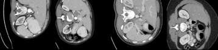
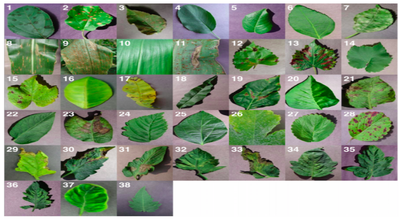
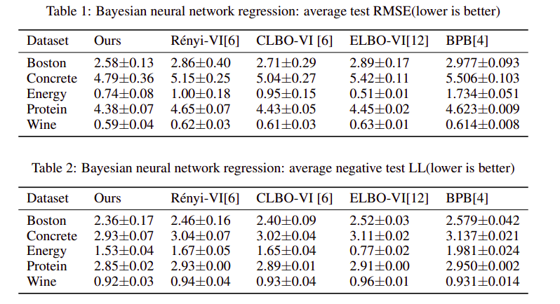
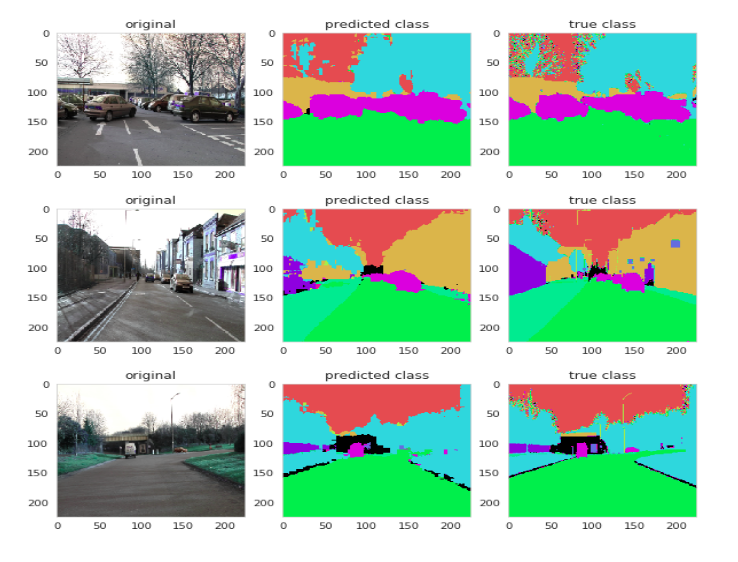
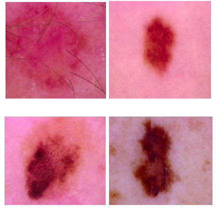
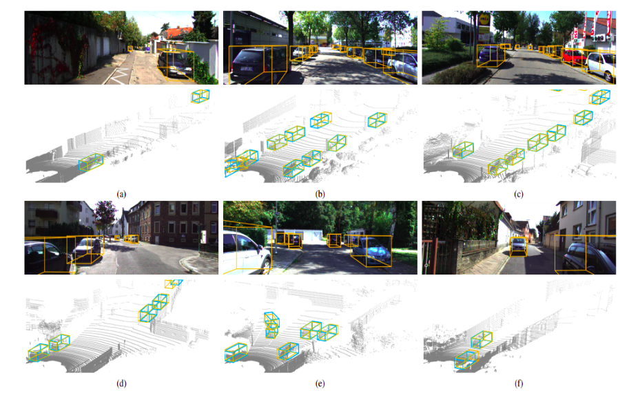
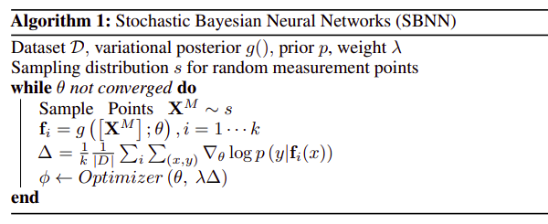

|
Hi! I am a senior year undergraduate at VIT Vellore. My research areas are bayesian deep learning, generative models, variational inference etc on the theoretical side and medical imaging, autonomous driving etc on the application side. More broadly, I am interested in deep learning and computer vision with a bayesian approach taking uncertainty into account. The communities I follow closely are NeurIPS, ICML, ICLR, CVPR, ICCV, ECCV, MICCAI, UAI and JMLR. I spent the summer of 2019 in Tessact where I worked on product recommendation using variational autoencoders. I spent the summer of 2018 in Tata Steel where I trained a neural network on power grid electricity consumption data to predict the load 24 hours ahead of the actual generation. In my free time, I work on my own open source projects which can be found here and write blogs related to them which can be found here. Besides research, I enjoy travelling, playing guitar and cooking (also eating). Email / CV / Linkedin / Medium / Github Twitter / Google Scholar / Kaggle If you would like to do a research collaboration, please send me an email. News[23th May 2020] Successfully defended my bachelors thesis. [27th Apr 2020] Attending ICLR 2020 conference. [6th Jan 2020] Appointed as teaching assistant for CSE4020 (Machine Learning) with Professor Gayathri P. [14th Sep 2019] Speaking on Automated Machine Learning at RMZ Millenia Business Park in Chennai, India. [3rd Jun 2019] Attending the Nordic Probabilistic AI School in Trondheim, Norway with full travel grant. [8th Apr 2019] Got selected for Computer Vision internship at Tessact in Mumbai, India. [23th Feb 2019] Ranked in the top 30 contestants for Flipkart Machine Learning Challenge held in Bengaluru, India. [6th Oct 2018] Speaking on Ethics of Artificial Intelligence at Channa Reddy Auditorium in Vellore, India. [15th May 2018] Got selected for Deep Learning internship at Tata Steel in Jamshedpur, India. Research Papers and Preprints1. Generate High Fidelity Images With Generative Variational Autoencoder Cite: Sagar, Abhinav. "Generate High Fidelity Images With Generative Variational Autoencoder." Abstract: In this work, we address the problem of blurred images which are often generated using Variational Autoencoders and the problem of mode collapse in Generative Adversarial Networks using a single model architecture. We use the encoder of VAE as it is while replacing the decoder with a discriminator. The encoder is fed data from a normal distribution while the generator is fed that from a gaussian distribution. The combination from both is then fed to a discriminator which tells whether the generated images are correct or not. We tested the model on 3 different datasets increasing in complexity MNIST, fashion MNIST and TCIA Pancreas CT dataset. On training the model for 300 iterations, it was able to generate much sharper images as compared to those of VAEs. This work is potentially very exciting as we are able to combine the advantages of generative models and inference models in a bayesian approach. As there is a shortage of medical data, this approach could be revolutionary given that we are able to reason from the bayesian approach taking into account the uncertainty of generation. 2. On Using Transfer Learning For Plant Disease Detection Cite: Sagar, Abhinav, and J. Dheeba. "On Using Transfer Learning For Plant Disease Detection." bioRxiv (2020). Abstract: Deep neural networks have been highly successful in image classification problems. In this paper, we show how deep neural networks can be used for plant disease recognition in the context of image classification. We have used a publicly available Plant Village dataset which has 38 classes of diseases. Hence the problem that we have addressed is a multi class classification problem. We have compared five different architectures including VGG16, ResNet50, InceptionV3, InceptionResNet and DenseNet169 as the backbones for our work. We found that ResNet50 which uses skip connections using a residual layer archives the best result on the test set. For evaluating the results, we have used metrics like accuracy, precision, recall, F1 score and class wise confusion metric. Our model achieves the best of results using ResNet50 with accuracy of 0.982, precision of 0.94, recall of 0.94 and F1 score of 0.94. 3. Bayesian Neural Network via Stochastic Gradient Descent Cite: Sagar, Abhinav. "Bayesian Neural Network via Stochastic Gradient Descent." arXiv preprint arXiv:2006.08453 (2020). Abstract: The goal of bayesian approach used in variational inference is to minimize the KL divergence between variational distribution and unknown posterior distribution. This is done by maximizing the Evidence Lower Bound (ELBO). A neural network is used to parametrize these distributions using Stochastic Gradient Descent. This work extends the work done by others by deriving the variational inference models. We show how SGD can be applied on bayesian neural networks by gradient estimation techniques. For validation, we have tested our model on 5 UCI datasets and the metrics chosen for evaluation are Root Mean Square Error (RMSE) error and negative log likelihood. Our work considerably beats the previous state of the art approaches for regression using bayesian neural networks. 4. Semantic Segmentation With Multi Scale Spatial Attention For Self Driving Cars Abstract: In this paper, we present an architecture using multi scale feature fusion at various scales for accurate and efficient semantic image segmentation. We have used dilated convolutional layers in downsampling layers and transposed convolutional layers in the upsampling layers and used concat layers to merge them. We have used skip connections in between alternate blocks which are comprised of convolutional and max pooling layers. We present an in depth theoretical analysis of our network with training and optimization details. We evaluated our network on the Camvid dataset using mean accuracy per class and Intersection Over Union (IOU) as the evaluation metrics on the test set. Our model outperforms previous state of the art on semantic segmentation achieving mean IOU value of 74.12 while running at >100 FPS. 5. Convolutional Neural Networks for Classifying Melanoma Images Cite: Sagar, Abhinav, and J. Dheeba. "Convolutional Neural Networks for Classifying Melanoma Images." bioRxiv (2020). Abstract: In this work, we address the problem of skin cancer classification using convolutional neural networks. A lot of cancer cases early on are misdiagnosed as something else leading to severe consequences including the death of a patient. Also there are cases in which patients have some other problems and doctors think they might have skin cancer. This leads to unnecessary time and money spent for further diagnosis. In this work, we address both of the above problems using deep neural networks and transfer learning architecture. We have used publicly available ISIC databases for both training and testing our model. Our work achieves an accuracy of 0.935, precision of 0.94, recall of 0.77, F1 score of 0.85 and ROCAUC of 0.861 which is better than the previous state of the art approaches. 6. Learning to Detect 3D Objects from Point Clouds in Real Time Cite: Sagar, Abhinav. "Learning to Detect 3D Objects from Point Clouds in Real Time." arXiv preprint arXiv:2006.01250 (2020). Abstract: In this work, we address the problem of 3D object detection from point cloud data in real time. For autonomous vehicles to work, it is very important for the perception component to detect the real world objects with both high accuracy and fast inference. In this work, we propose a novel neural network architecture along with the training and optimization details for detecting 3D objects in point cloud data. We compared the results with different backbone architectures including the standard ones like VGG, ResNet, Inception with our backbone. Also we present the optimization and ablation studies including designing an efficient anchor. We have used the Kitti 3D Bird’s Eye View dataset for benchmarking and validating our results. Our work surpasses the state of the art in this domain both in terms of average precision and speed running at > 30 FPS. This makes it a feasible option to be deployed in real time applications including self driving cars. 7. Uncertainty Quantification using Variational Inference for Biomedical Image Segmentation 
Abstract: Deep learning motivated by convolutional neural networks has been highly successful in a range of medical imaging problems like image classification, image segmentation, image synthesis etc. However for validation and interpretability, not only do we need the predictions made from the model but also how confident it is while making those predictions. This is important in safety critical applications for the people to accept it. In this work, we used an encoder decoder architecture based on variational inference techniques for segmenting brain tumour images. We compared different backbones architectures like U-Net, V-Net and FCN as sampling data from the conditional distribution for the encoder. We validated our work on BRATS dataset using Dice Similarity Coefficient and Intersection Over Union as the evaluation metrics. Our model achieves state of the art results while making use of a principled way of uncertainty quantification. 8. Stochastic Bayesian Neural Networks Abstract: Bayesian neural networks perform variational inference over weights but calculation of the posterior distribution remains a challenge. Our work builds on variational inference techniques for bayesian neural networks using the original Evidence Lower Bound. In this paper, we present a stochastic bayesian neural network in which we maximize Evidence Lower Bound using a new objective function which we name as Stochastic Evidence Lower Bound. We tested our approach on 5 publicly available UCI datasets using test RMSE and log likelihood as the evaluation metrics. We demonstrate that our work not only beats the previous state of the art algorithms but also allows uncertainty quantification and is scalable to larger datasets. Blogs and Articles1. Cryptocurrency Price Prediction Using Deep Learning 2. Predicting Airbnb Prices Using Machine Learning in Vancouver 3. How to Easily Deploy Machine Learning Models Using Flask 4. Graduate Admission Prediction Using Machine Learning 5. Convolutional Neural Network for Breast Cancer Classification 6. How to Train Your Self Driving Car Using Deep Learning 7. Customer Segmentation Using K Means Clustering 8. Multi Class Object Classification for Retail Products 9. Deep Learning for Detecting Pneumonia from X-ray Images 10. Deep Learning for Ship Detection and Segmentation 11. Deep Learning for Iceberg detection in Satellite Images 12. Nucleus Segmentation using U-Net 13. Pedestrian detection using Non Maximum Suppression algorithm 14. ICC 2019 Cricket World Cup Prediction using Machine Learning Code and Repositories1. Cryptocurrency Price Prediction Using LSTM neural network 2. Breast Cancer Classification using CNN and transfer learning 3. Launch machine learning models into production using flask, docker etc. 4. Pedestrian Detection using Non Maximum Suppression 5. Implementation of the paper "End to End Learning for Self-Driving Cars" 6. Multi class object classification using Freiburg Groceries Dataset 7. Predicting Airbnb price in Vancouver 8. Predicting the winner of 2019 cricket world cup using random forest algorithm 9. Implementation of papers on Bayesian deep learning 10. Sample notebooks for Kaggle competitions Press Coverage and Media1. Indian Data Scientist Comes Up with Deep Learning Method of Predicting Bitcoin Prices in Real Time 2. Researcher Uses Machine Learning to Predict Crypto Prices in Real-Time 3. Data Scientist Uses Deep Learning to Predict BTC Price in Real-Time 4. Daily Trending Bitcoin News and Market Sentiment: Macro Bear Over, Neural BTC Price Predictions? 5. Data Scientists are Predicting Cryptocurrency Prices With Deep Learning |